Umut Eren Demirci
Readable systems, tuned with data. I design difficulty curves, progression and systems players can read at a glance, and I test them with data.
See Cloudhaven SkyportSee Arcana SiegeDownload CVCloudhaven Skyport
An arcade idle management game for phones. You run an airship port on a floating island: airships dock every forty seconds, travellers queue at customs, tickets, bag drop and security, and every counter serves only while someone stands behind it. You serve, carry the coins on your back, and walk them onto build pads.
I designed the counter chain, 22 build pads and 10 goals per island, staff and second counters, a timetable with Grand Liners, three islands with their own twists (storms, VIPs), offline earnings and daily events, and opt-in rewarded ads only. An economy simulator played every island with three kinds of bot to set the pacing, and the art and audio direction came from studying the genre's leaders.
One-pagerGDD (11 pages)FlowchartsBalance workbookAd test and KPI plan
Built with an AI coding assistant (Claude). I designed the game, set the rules, targets and tuning, ran the balance simulations and play-tested every build phase.
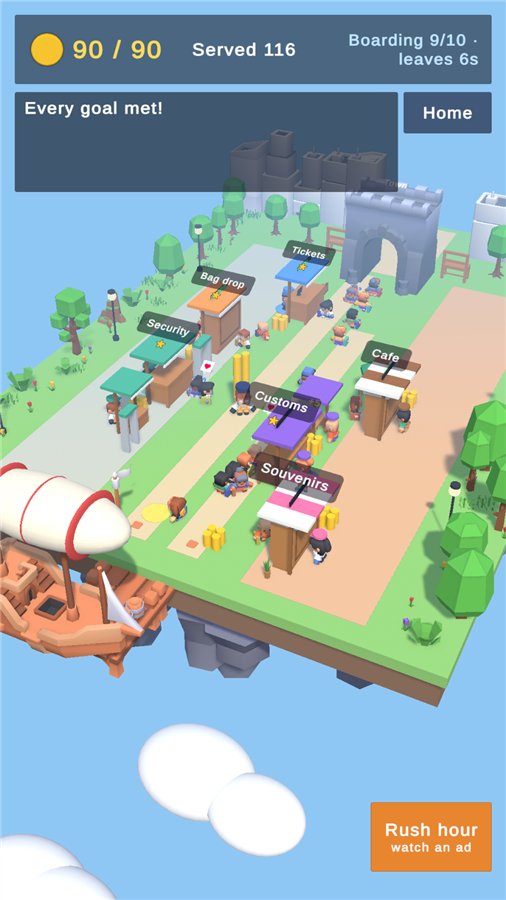
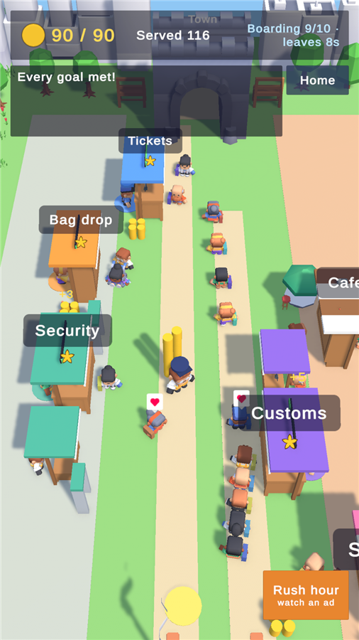
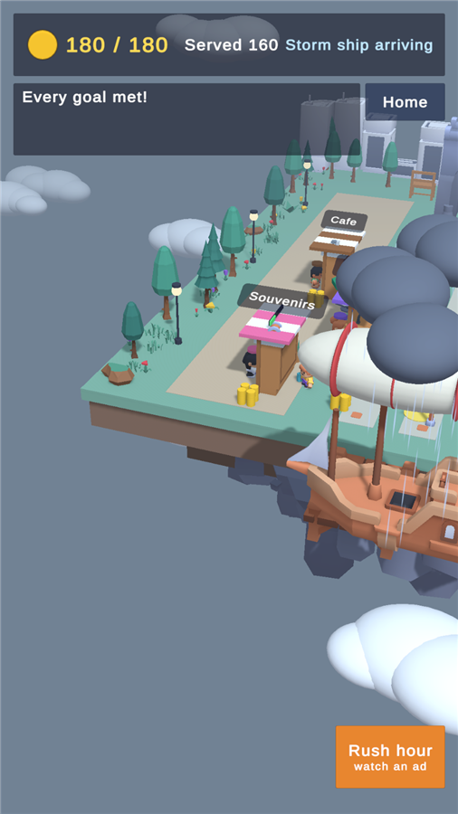
Arcana Siege
A match-3 tower defense for phones. A road on top, a board below: every tile colour belongs to a tower, so every match is an order. The colour picks the tower, the size picks the strength, and the enemies walk while you think.
I designed four towers, seven enemy types (armour, shields, healers, a brood that splits), a 1-of-3 upgrade draft with bad-luck protection, and a 12-siege campaign across four realms with permanent upgrades and a daily siege. Every number was tuned by bots playing the real rules, and the art and audio direction came from studying the genre's leaders.
One-pagerGDD (12 pages)FlowchartsBalance workbookAd test and KPI plan
Built with an AI coding assistant (Claude). I designed the game, set the rules, targets and tuning, ran the balance simulations and play-tested every build phase.
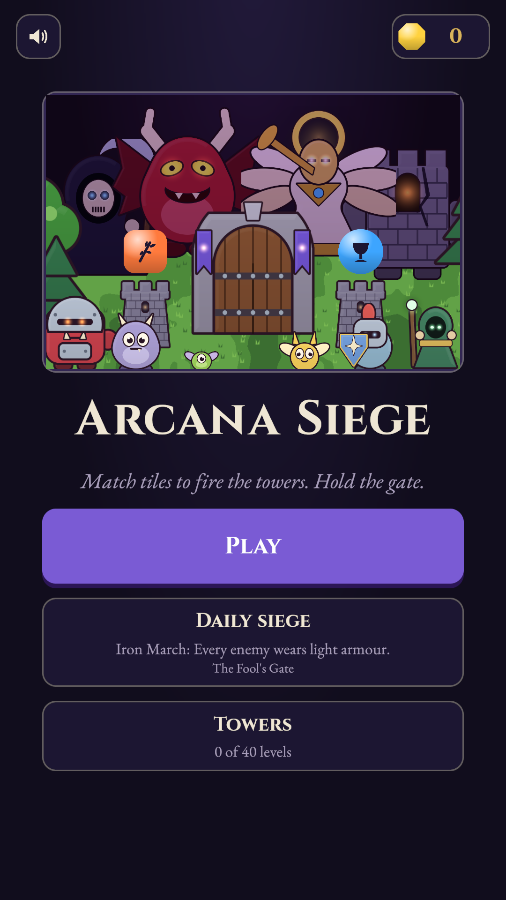
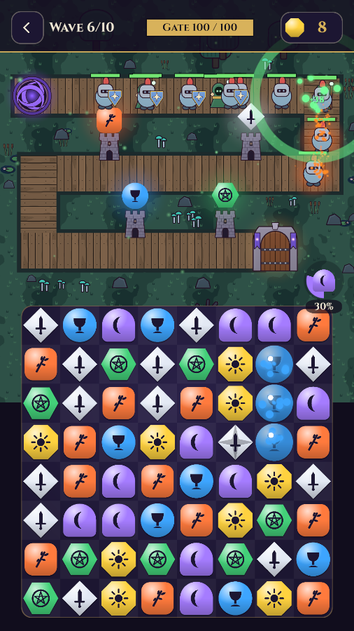
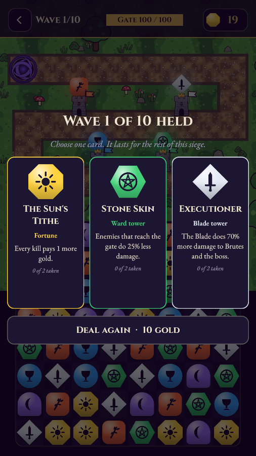
Arcana Match
A calm, tarot-themed match-3 for phones. Walk the Fool's Journey across 85 levels on a map; every win adds a card to your deck, and every chapter ends at a gate that awards one of the 22 major arcana. Pip, the Fool's dog, tells the story.
I designed the board, 11 board shapes, three blockers, five special tiles and six combos, three boosters and a 78-card collection meta, wrote the story, and balanced every level with a bot that plays the real rules.
One-pagerGDD (22 pages)FlowchartsBalance workbookCard catalogue
Built with an AI coding assistant (Claude). I designed the game, set the rules and tuning, ran the balance simulations and play-tested every build phase.
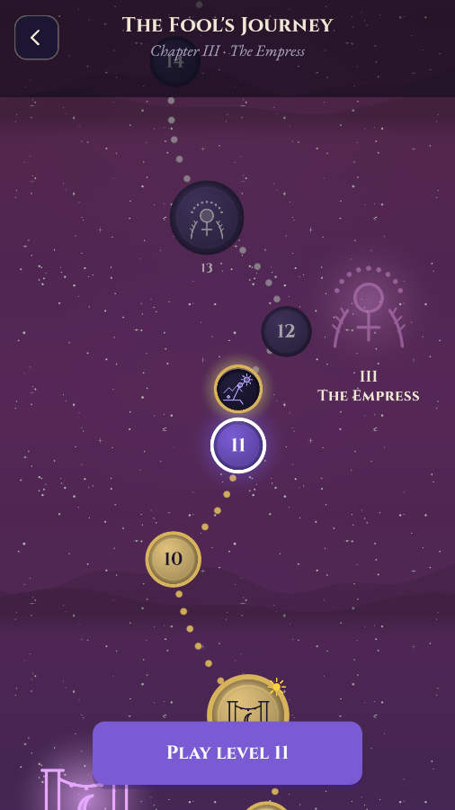
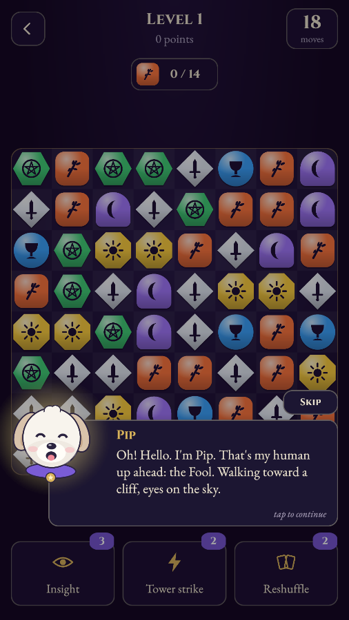
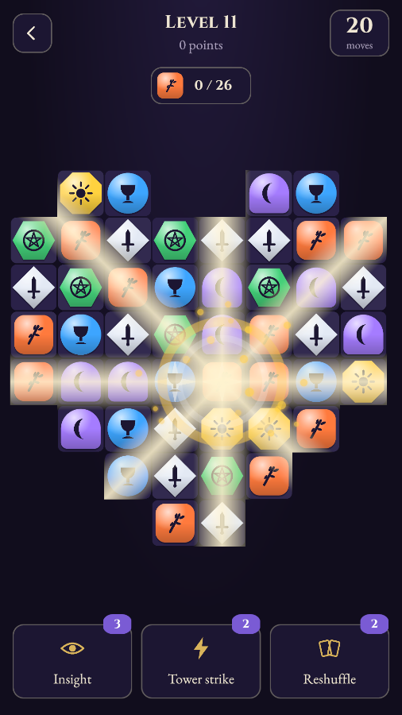
The Mouth of Silence
A narrative puzzle adventure and a playable chapter of my novel The Chronicles of Demise. Lyssia, a scholar expelled for heresy, leads a thief, a mercenary and a fake god to a vault the gods erased from every map. She has no weapon: she reads Kha'shul, the Ancients' language of definition, and speaks the world into new shapes.
I designed Kha'shul as the puzzle system (10 words, 5 grammar rules, one rule taught per puzzle, with designed near misses instead of fail states), a star-code navigation puzzle, a crew that moves and talks like people, and a campfire night whose answers the final riddle calls back. I rewrote a star-chart puzzle after an outside playtest found it too obscure, and cast all four voices by ear.
One-pagerGDD (16 pages)Kha'shul language referenceFlowchartsScript sample
Built with an AI coding assistant (Claude). I wrote the story and the language, designed the puzzles and the crew, wrote and cast the dialogue, and play-tested every build phase.
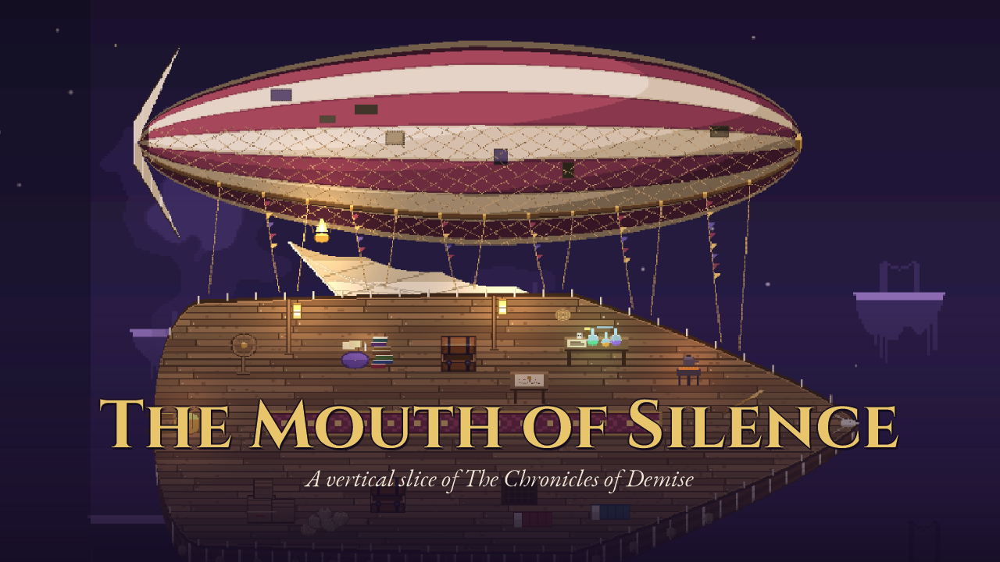
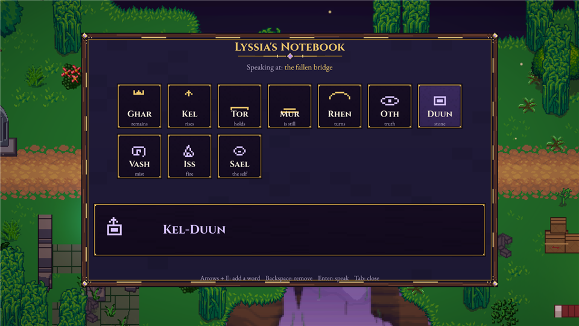
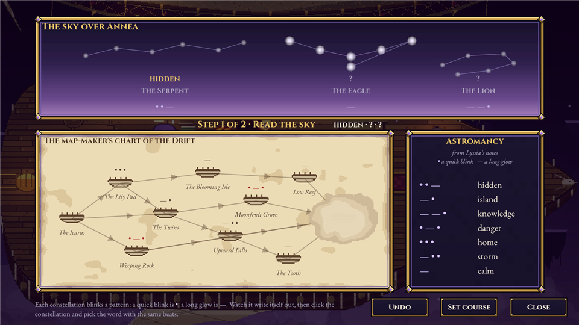
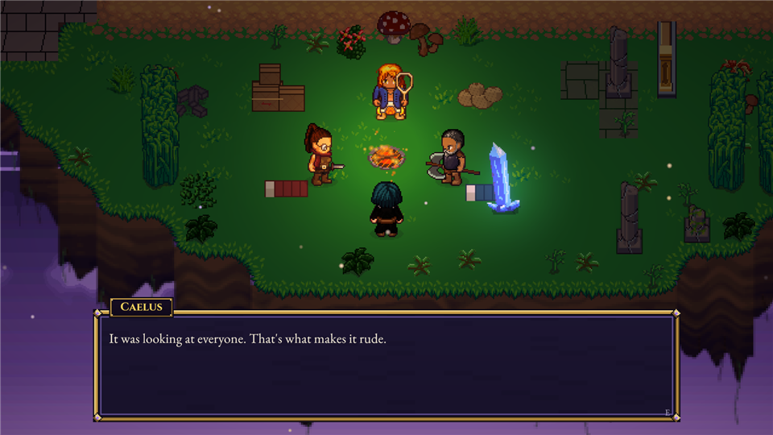
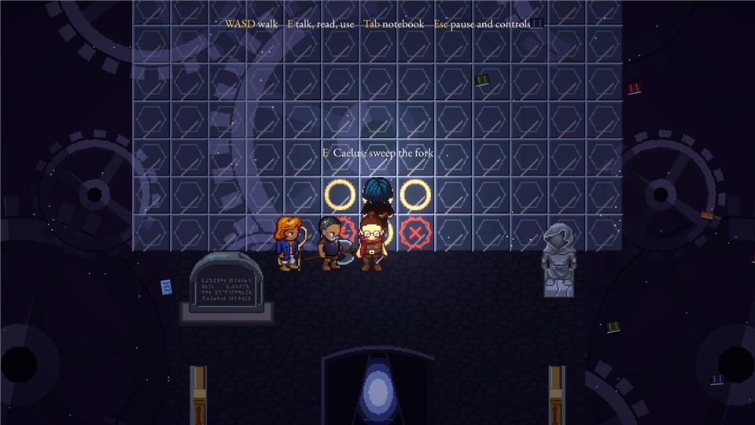
Game deconstructions
How two successful mobile games work, from public data: store listings, patch notes, market estimates and player reviews. Each breakdown covers the core loop, meta, economy and live ops, and ends with proposals I would test, each with a hypothesis, an A/B test design and guardrail metrics.
Raid Rush
Tower defense where you draft the road as well as the towers. I map its 12-tier merge ladder, three layers of spending, and the live-ops calendar of clan wars, league seasons and collabs, then propose a draft-protection rule that keeps the luck.
Royal Match
How execution beat novelty: a faster, clearer core, one monetisation moment at the end of a failed level, and 30+ event types that add variety without complexity. Includes a comparison with my own match-3, Arcana Match.
Desk research from public sources. KPI statements are hypotheses, since I have no internal data; every source is listed in each document.
The Chronicles of Demise
A narrative RPG concept set in worlds whose rules come from their stories. My prototype asks: can the player feel a character's emotions through movement alone?
Trigger zones switch the character between Neutral, Anxious and Determined. Each state changes walk speed (500 / 150 / 800), braking and the world's colour, so anxiety feels heavy and hesitant before any text appears.
Read the design sample (4 pages)
A playable chapter of the same story, in Unity: The Mouth of Silence.
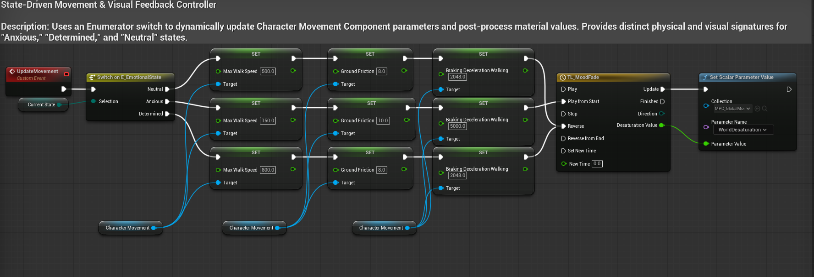
From classrooms to game design
Before games I spent twelve years teaching English and designing courses. That job was mostly about difficulty curves: introduce one skill at a time, watch where people struggle, adjust the pace. I studied linguistics and English literature at Ankara University, and since 2013 I have been writing The Chronicles of Demise, a fantasy novel series I am now adapting into a game. I'm looking for game design roles in systems, levels or content, especially in mobile and hybrid-casual games.